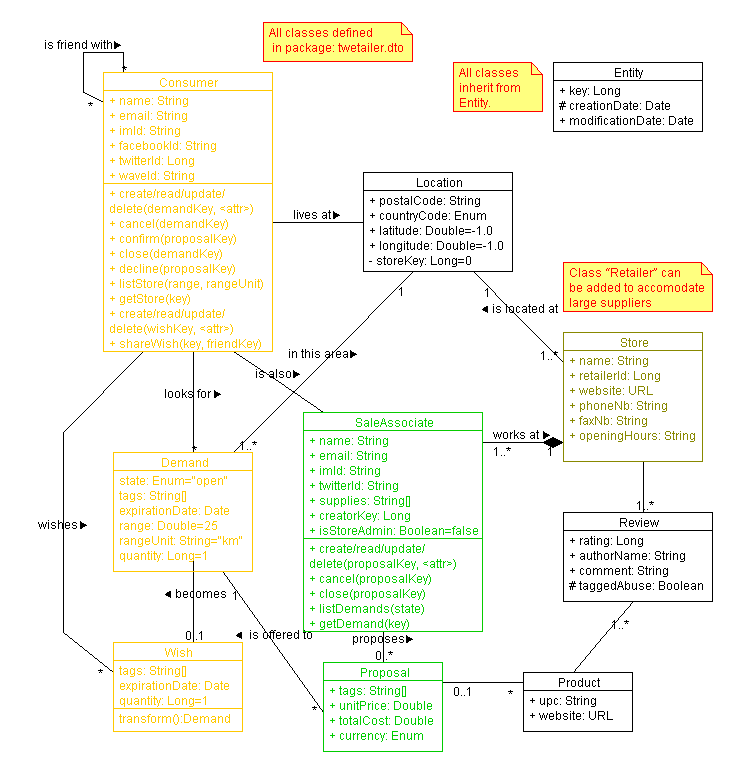
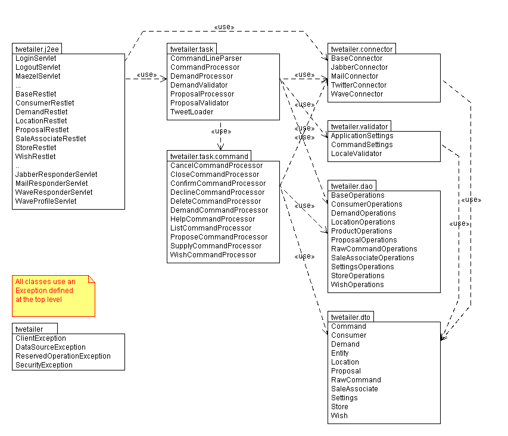
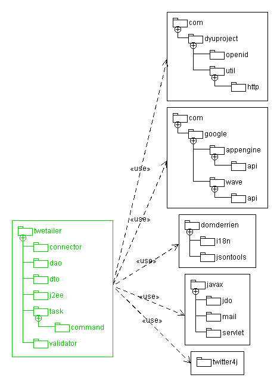
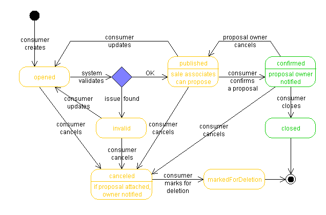
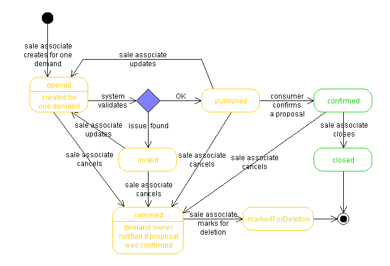

Introduction
This page contains information about:
- Features already implemented.
- Feature to be implemented soon (in the coming milestones).
The various sections cover:
Object types
- Entity
- Base class.
- RawCommand
- Message as received by the system with the originator's information.
- Command
- Abstract class for the parsed commands.
- Demand
- Description of a product or a service a consumer is looking for and that can be pushed to listening sale associates.
- Wish
- Description of a product or a service a consumer is looking for and that can be shared with friends, who at one point can transformed them in demands.
- Proposal
- Description of a product or service a sale associate proposes in response to a demand.
- Consumer
- Profile of any user submitting demands or wishes to the system.
- SaleAssociate
- Profile of an authorized user that can listen to demand tags into around his/her store location and that can post proposals in response to demands.
- Store
- Description of real store (address, opening hours, etc.) where consumers can pick up the demanded products.
- Location
- Spot on earth, ultimately represented by its geo-coordinates
- Product
- Description of a real product consumers can be proposed and they can confirm.
- Comment
- Message end-users can attached to stores and products.
- Evaluation
- Statistical information produced by the system for consumers, sale associates, and stores.
- 3PVerifier
- Third party provider authenticating stores and/or sale associates.
- 3PRating
- Third party provider rating stores and/or sale associates.

Class diagram with the object manipulated by the system

Package diagram with the elements defined for the system

Package diagram all elements used by the system
States
- opened
- An object (like a demand or a proposal) has just been created or updated, not yet validated.
- published
- An object has just been validated and is ready to be pushed to other actors.
- confirmed
- A proposal has just been accepted by the demand owner. It changes the state of the demand too.
- closed
- The product or service offered by a proposal in response to a demand has just been served.
- cancelled
- An object has been cancelled by its owner.
- reserved
- After a proposal confirmation, the consumer can used Amazon FPS to pay for the transaction.
- settled
-
Once the product(s) for a reserved demand/proposal is(are) ready to be delivered, the demand goes into the settled state.
At that time, Amazon FPS sends the money to the sale associate.
- markedForDeletion
- A cancelled object has been marked for deletion by its owner.
- verificationPending
- A self-registered sale associate has just been created, not yet validated.
- Note that a sale associate account created or updated by another validated sale associate goes into the state
confirmed.

Demand state diagram

Proposal state diagram
Prefixes
Lusanga/Twetailer offers a command-line interaction model: end-users have to compose small messages to interact with the
system. These messages are technology agnostic: can be sent by e-mail, text messages, and even voice messages. The syntax
is very basic: without indication, all given pieces of text are considered as tags. To transmit other information, users
have to prefix them, as in range: 25km when they want to specify that the search should be done 25km around
their default or specification location.
The system allows prefix labels to be submitted as shortened to 3 letters. For example sending proposal:123 totalCost:$34.76
is equivalent to send just prop:123 tot:34.76. The system ignores also the prefix case.
- action, !
- The main attribute used to identify the type of action the user wants to achieve.
- Default:
action:demand.
- expiration
- Introduces a date in the future.
- Can be:
YYYY-MM-DD or YY-MM-DD or MM-DD (with or without dashes) and the time is considered being 00:00.
- Can be:
month DD, YYYY or month DD with the month in the user's preferred language.
- Can be: HH:MM (seconds are ignored) and the considered day is today or tomorrow.
- Can be:
h(am/pm) or h:mm(ap/pm) (seconds are ignored) and the considered day is today or tomorrow.
- Can be any variation of date and time
- help, ?
- Delivers the help message attached to the first specified keyword.
- locale, postalCode
- Introduces postal and country codes.
- Can be:
##### US.
- Can be:
###### CA.
- At one point in the process, the given postal code is checked against a public database available for the country.
- If the given postal code is valid, the corresponding geo-coordinates are attached to
Location record.
- Can be:
(lat)x(long)
- Default: locale of the last submitted demand.
- price, unitPrice, cost
- Introduces a unit price, without tax in the currency of the store country.
- The money sign should be ignored, like in
$5.
- proposalKey
- Introduces the identifier of a
Proposal.
- quantity, qty
- Introduces the quantity of demanded products or the quantity of offered products.
- Default:
1.
- reference, demandKey
- Introduces the identifier of a
Demand.
- range, rng, distance
- Introduces a distance used to define a region around the
Location attached to a Demand.
- Can be:
###### km.
- Can be:
###### (MI/miles).
- Default:
50km.
- state
- Introduces the current state of an object.
- storeKey
- Introduces the identifier of a
Store.
- tags, tag, keyword, keywords, []
- Introduces the description of the action.
- The prefix, like
tags:, is optional.
- If the prefix is omitted, all elements submitted that have not been associated to another prefix are considered being part of the tags.
- If the prefix is present, all elements submitted following the tag and that have not been associated to another prefix are considered being part of the tags.
- Variation: "+tags:" to accommodate tag addition instead of replacement.
- Variation: "-tags:" to accommodate tag removal instead of replacement.
- totalCost
- Introduces the total transaction price, all taxes included, in the currency of the store country.
- The money sign should be ignored, like in
$5.
Actions
- cancel
- [demandKey]: cancel demand (restriction: owner), with notification of the associated proposal's owner.
- [proposalKey]: cancel proposal (restriction: owner), with notification of the demand owner.
- close
- [demandKey]: confirm the delivery of the product (restriction: owner), with notification of the other sale associate if it did closed the proposal yet.
- [proposalKey]: confirm the delivery of the product (restriction: owner), with notification of the other consumer if it did closed the demand yet.
- confirm
- [proposalKey]: select one proposal (restriction: demand.owner), with 1) notification about the store information, and 2) notification to the proposal owner.
- decline
- [demandKey]: refuse one demand, with no notification to the demand owner.
- [proposalKey]: refuse one proposal (restriction: demand.owner), with the notification to the proposal owner.
- delete
- [demandKey]: mark one demand for deletion (restriction: demand.state == cancelled && demand.owner).
- [proposalKey]: mark one proposal for deletion (restriction: proposal.state == cancelled && proposal.owner).
- demand
- [tags, ...]: create a demand.
- [demandKey, tags, ...]: update a demand which is still update-able (restriction: owner) with notification of the associated proposals' owner that their proposals have been cancelled.
- Note: without any prefix, remaining keywords are considered being part of a "+tags" attributes.
- Note: to replace the tag list or to remove few of them, the prefixes "tags:" and "-tags:" must be explicitly specified.
- help
- []: send generic message.
- [keyword]: send message associated with the keyword.
- list
- See sub-section below.
- propose
- [tags, ...]: create a proposal (restriction: only sale associates can propose for demands that has been sent to them or their store).
- [proposalKey, tags, ...]: update one proposal which is still updatable (restriction: owner or another sale associate from the same store).
- Note: without any prefix, remaining keywords are considered being part of a "+tags" attributes.
- Note: to replace the tag list or to remove few of them, the prefixes "tags:" and "-tags:" must be explicitly specified.
- supply
- []: list the currently supplied tags.
- [tags]: replace/add/remove supplied tags to the sale associate account.
- Variation: "+tags" to add supplied keywords instead of replacing the entire list.
- Variation: "-tags" to remove supplied keywords instead of replacing the entire list.
- wish
- [tags, ...]: create a wish.
- [wishKey, tags, ...]: update one wish (restriction: owner).
- www
- ?
Action: list
Listing results introduces paging issues: if too much data have
to be sent to the end-users, for example, more than 10 short messages,
the system cannot just send them in a whole thread. So, after a certain
limit, the system should display a message informing the user that just
the first set of messages have been sent and that it should submit his/her
request again with the parameter page=### to be able to get
the corresponding chunk of messages.
- []
- All consumer demands, in the state {
invalid, published, confirmed}
- [demandKey/*]
- Identified demand, with the list of proposals.
- Restriction: owner or one associated proposal owner.
- Meta-character
* for all consumer demands, equivalent to submitting !list without arguments.
- [proposalKey/*]
- Identified proposal, with the store information.
- Restriction: owner or associated demand owner.
- Meta-character
* for all sale associate proposals.
- [storeKey/*]
- Identified store with:
- Store information: address, phone number, Web site, and opening hours
- Statistics for the store: total number of proposals, total number of closed demands, number of pending proposals, number of employees
- Statistics from third parties like Praize/Yelp/etc.
- Meta-character
* for all stores in the default or the specified area.
- [tags/*]
- List the other tags in relation with the given ones for all stores/sale associates in the default or the specified area.
- Tags should be printed in the decreasing frequency, something like:
wii(35) games(32) xbox(12) ...
- Meta-character
* for demanded tags in the default or the specified area.
- [supply/*]
- Meta-character
* for all supplied tags in the default or the specified area.